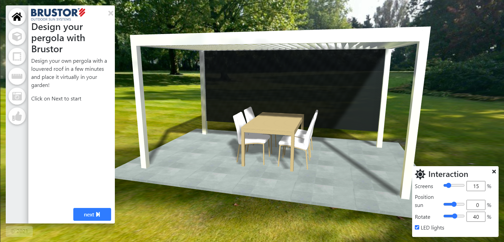
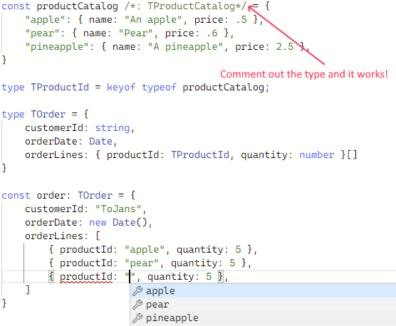
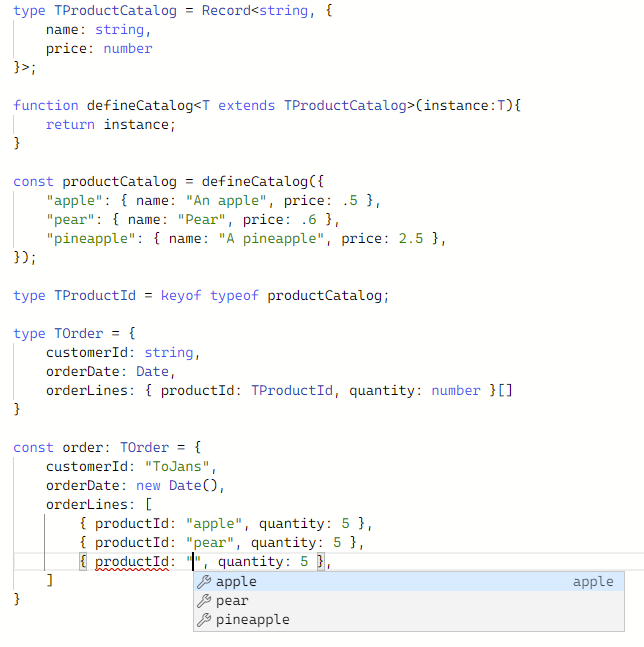

Reference by value in TypeScript
I am currently examining ways to improve development UX for a low-code platform that I’m opening up to the public.
As I started experimenting with TypeScript I tweeted about it.
I constructed a minimal example in the TypeScript playground:
— Tom Janssens (@ToJans) March 4, 2021
- convert a data interface to a template interface
- verify references at compile time
Try it yourself here:https://t.co/xLFU3LcB8F pic.twitter.com/SlkHVVOsd6
Because I received quite a lot of inquiries, I decided to blog about it.
This is potentially the first post in a series about leveraging the TypeScript type system to the extreme.
The context
I am currently extending the Virtual Sales Lab platform, so we can open it up to external developers.
Virtual Sales Lab is a SaaS that provides online 3D configurators for sales and marketing; below you can see a screenshot from one of our customers' configurator; you can test a copy of the configurator here.

It allows a developer to build something usable in a couple of hours, and a full blown configurator usually takes 1 to 4 weeks.
However, it requires a little bit of effort to get acquainted with the platform as a developer.
As the intent is to make this platform open to all developers as a low-code platform with a low barrier to entry, I was wondering if I could make the developer experience extremely user friendly.
I am a strong believer of leveraging existing tools as much as possible, so I started experimenting with TypeScript. It turns out a lot is possible by being creative with the type system.
My first experiment: referential integrity.
Our platform takes in a strongly-typed JSON file and converts it into an online 3D configurator like the one I mentioned above.
As the JSON is type-checked, you cannot provide an absolute bogus representation, but bugs are still possible.
Here is an example of a potential bug:
"doorpanel": {
"elementType": "panel",
"baseMaterialId": "wood ",
"width": 100,
"height": 100,
"opts": {
"thickness": 2
}
}
Did you spot the problem? Instead of "wood", I accidentally typed "wood ".
Luckily it raises a proper error at runtime, which allows you to fix the problem, but it does require a round-trip to the engine.
As short feedback loops are the bee’s knees, I wondered if there was a way to catch this at compile-time….
Basics first: whatever happened to TypeScript?
As my TypeScript was a bit rusty - I was mostly consulting over the past few years -, this was like a TypeScript-101 experience for me, so let’s start with the basics…
Let’s say we have 2 simple types: a TProductCatalog and a TOrder type. How would we represent these?
type TProductCatalog = Record<string, {
name: string,
price: number
}>;
type TOrder = {
customerId: string,
orderDate: Date,
orderLines: { productId: string, quantity: number }[]
}
This would allow you to define the following constants:
const productCatalog: TProductCatalog = {
"apple": { name: "An apple", price: .5 },
"pear": { name: "Pear", price: .6 },
"pineapple": { name: "A pineapple - or Ananananananas as they say in Dutch", price: 2.5 },
}
const order: TOrder = {
customerId: "ToJans",
orderDate: new Date(),
orderLines: [
{ productId: "apple", quantity: 5 },
{ productId: "pear", quantity: 5 },
{ productId: "pine-apple", quantity: 5 },
]
}
You can try adjusting the order or product catalog yourself here. Please note you have auto-complete on the field members automatically; thank you TypeScript!
But, did you spot the error?
Yes, the dreaded reference-by-id: not "pine-apple", but "pineapple".
The keyof keyword to the rescue!
It took some digging, but this was one of the easier finds: I only had to figure out the correct keyword: keyof.
const productCatalog: TProductCatalog = {
"apple": { name: "An apple", price: .5 },
"pear": { name: "Pear", price: .6 },
"pineapple": { name: "A pineapple - or Ananananananas as they say in Dutch", price: 2.5 },
}
type TProductId = keyof typeof productCatalog;
type TOrder = {
customerId: string,
orderDate: Date,
orderLines: { productId: TProductId, quantity: number }[]
}
const order: TOrder = {
customerId: "ToJans",
orderDate: new Date(),
orderLines: [
{ productId: "apple", quantity: 5 },
{ productId: "pear", quantity: 5 },
{ productId: "pine-apple", quantity: 5 },
]
}
However, the type for TProductId was a string…
Why was TProductId a string and not an "apple"|"pear"|"pineapple"
At first I was puzzled, but then it hit me… This makes sense because we literally declare the type of productCatalog as a Record<string,...>. which is the type parameter we pass to the keyof …
Hello Captain Obvious!
So I tried removing the typing from the const, and I was thrilled!

Try it yourself in the Playground Link
So how can we avoid this? So autocomplete/referential integrity works, but we cannot have types?
Helper functions to the rescue!
This took some digging, and apparently there is a simple workaround: use a helper function:
function defineCatalog<T extends TProductCatalog>(instance:T){
return instance;
}
This function takes in an instance of any type T, as long as T implements the TProductCatalog…
And voila, you have reference-by-value at compile time.

Try it yourself in this playground
In closing
There you have it; referential integrity checking at compile-time. While this is not exactly rocket-science, it required a little bit out-of-the-box thinking.
I might be using the type system beyond it’s initial intent, but I think this will provide a lot of value in the well-constrained low-code platform that we are building for Virtual Sales Lab.
Please note that this is still a little bit rough around the edges, especially as you start creating dependencies on other types.
I hope this was an interesting read; if I receive a lot of feedback on this I will probably write more posts about some of my other, more advanced findings, so let me know!